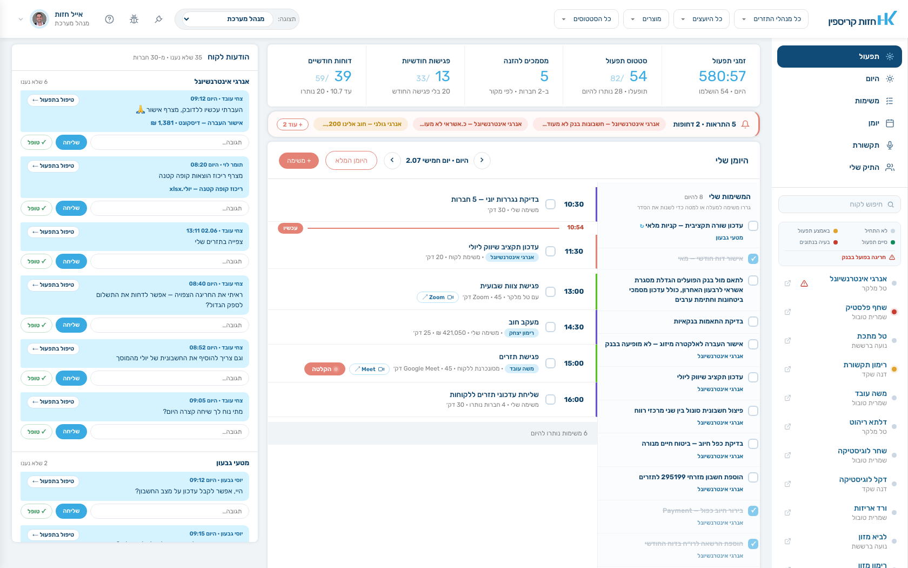
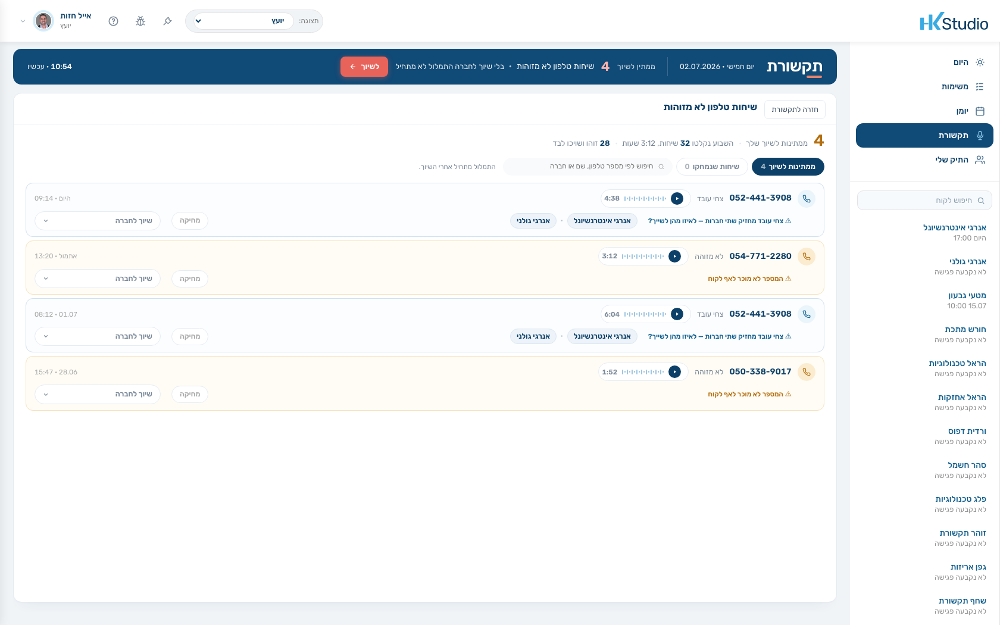

תפעול תזרים ידני עולה 4–8 שעות בחודש פר לקוח. זה מה שמקבע יועץ טוב
סביב עשרה לקוחות. HK מורידה את השעות האלה לאפס.
התיק שלי — כל הלקוחות במבט אחד, עם פס דופק, יתרה ומגמה
הכאב
אתה לא יועץ. אתה מנהל תפעול שלפעמים מייעץ.
בשמונה בבוקר אתה פותח את הוואטסאפ ורואה ארבע־עשרה הודעות. אחת מהן היא
צילום של שיק. אחת שואלת אם עדכנת את התשלומים. שתיים הן אקסלים. אחת היא
לקוח שכועס שלא חזרת אליו. אף אחת מהן לא ייעוץ.
בעשר יש לך פגישה. את ההכנה אתה עושה בתשע וחצי, מהזיכרון — פותח את הקובץ
מהפעם הקודמת, מנסה להיזכר מה סוכם, מה השתנה, ולמה בפעם שעברה הוא היה קצר
רוח. בפגישה עצמה אתה טוב. אחריה, בין ארבע לשש, אתה מקליד סיכום שאולי תשלח
מחר.
בין לבין אתה מקטלג תנועות בנק שלא שייך שאתה מקטלג. מתאים בין מה שצפית לבין
מה שקרה. רודף אחרי חומר מלקוח שלא הביא — פעם שלישית. מזין שיק בתאריך
פירעון. מוודא שהרווח הנקי בדוח באמת יושב על תנועת הבנקים, כי אם לא — אתה
תגלה את זה מול הלקוח.
בסוף החודש אתה יודע שני דברים:
שני לקוחות נפלו בין הכיסאות.לא כי הם לא חשובים — כי לא היה זמן.
אתה לא יכול לקחת עוד לקוח.לא כי אין ביקוש. כי אין שעות.
וזו הנקודה הכואבת באמת: הלקוח משלם לך על החשיבה, ואתה מבלה 80% מהזמן על
ההקלדה. כשלקוח עוזב, זה כמעט אף פעם לא בגלל שהייעוץ היה גרוע. זה בגלל שהוא
הרגיש נטוש בין הפגישות.
המתמטיקה
התקרה שלך היא חשבון פשוט. אפשר לפתור אותו.
השעות
בלי HK
עם HK
תפעול תזרים פר לקוח לחודש
4–8 שעות
0
הכנה לפגישה
~שעה
נגזרת אוטומטית — דקות
סיכום ומשימות אחרי פגישה
~חצי שעה
טיוטה מוכנה לאישור — דקות
מענה שוטף בוואטסאפ
1–2 שעות
מנהל התזרים עונה; אליך מגיע רק מה שדורש יועץ
סה״כ פר לקוח לחודש
7–10 שעות
1–1.5 שעות
יועץ שמקדיש 80 שעות בחודש לעבודת לקוחות מגיע ל־8–10 לקוחות. אותן 80
שעות, כשהפעילות היחידה שנשארת היא ייעוץ, מכסות 25–30 לקוחות — ועדיין
נשאר זמן לפיתוח עסקי.
הכסף
הנחות לדוגמה — להחליף במספרים האמיתיים של המשרד:
מצב היום10לקוחות25,000 ₪ בחודש300,000 ₪ בשנה
←
מצב עם HK25לקוחות62,500 ₪ בחודש750,000 ₪ בשנה
בהנחת ריטיינר חודשי ממוצע של 2,500 ₪ ללקוח.
הפרש: 37,500 ₪ בחודש — בלי לגייס עובד אחד, בלי לפתוח משרד, בלי להאריך את
יום העבודה.
מכיוון ש־HK מתומחרת פר לקוח, החשבון היחיד שצריך לעשות הוא: האם עלות HK פר
לקוח קטנה מהריטיינר שאתה גובה עליו. אם כן — כל לקוח נוסף נכנס ישר לרווח, כי
השעה שהוא היה גוזל כבר לא קיימת.
מה המתמטיקה הזאת לא אומרת
כדי שהמספר יהיה אמין, צריך לומר גם את זה:
לא תעבור מ־10 ל־25 בחודש. HK פותרת את בעיית הקיבולת — את בעיית הגיוס אתה עדיין פותר. אבל מהיום זו בעיה של מכירות, לא של שעות.
לא כל יועץ רוצה 25 לקוחות. יש מי שיישאר על 12 ויעבוד שלושה ימים בשבוע. גם זה פתרון של אותה משוואה.
החודשים הראשונים של לקוח חדש כבדים יותר — כללי הקיטלוג נלמדים, הזיכרון נבנה. מהחודש השלישי העלות התפעולית יורדת בהתמדה.
מה HK עושה
ארבעה דברים ש-HK עושה בשבילך. לפי סדר החשיבות.
עמוד 1
התפעול — HK עושה את החודש במקומך
זה לא פיצ׳ר, זו עבודה. מנהל תזרים של HK מריץ לכל אחת מהחברות שלך, כל חודש,
את כל שרשרת התפעול: חמישה שלבי עבודה וחמש בדיקות. אתה לא נוגע בזה. אתה
מקבל תזרים מוכן ובדוק — והכלל שסוגר את החודש הוא שהתזרים לא נשלח ללקוח עד
שכל חריגה דווחה או הוכרעה.
חמישה שלבי עבודה: קיטלוג כל תנועה חדשה מהבנק (AI מציע, מתפעל מאשר, הכללים לומדים) · סריקת שיקים יוצאים עם זיהוי מוטב והזנה בתאריך הפירעון · נגררות ולא צפויות — מה שצפינו ולא קרה מול מה שקרה ולא צפינו · מענה להודעות הלקוח והזנתן לתזרים · הזנות ואוטומציה קדימה.
חמש בדיקות אחרי העבודה: שורה תקציבית · דוח חודשי מול תנועת הבנקים בסבילות של 300 ₪ — הדוח לא ״ממציא״ כסף · דוח תקציבי שבו כל חסר מקבל הגדרה · חומר שלא הגיע מהלקוח · שינויים מהותיים מאתמול.
הזמן נמדד פר חברה — אתה יודע כמה עולה לך כל לקוח בתפעול בפועל, לא בהערכה.
מצב תפעול על חברה אחת — חמשת שלבי העבודה עם מונה משימות בכל שלב, ושעון שמודד את הזמן

המבט־על של מנהל התזרים — זמני תפעול, סטטוס, מסמכים להזנה ודוחות חודשיים על פני כל החברות
עמוד 2
הזיכרון — המערכת זוכרת את הלקוח במקומך
יועץ עם 25 לקוחות לא זוכר מה כואב לכל אחד. HK מחזיקה לכל לקוח כרטיס זיכרון
חי, ב־12 קטגוריות, שנבנה מכל מה שנאמר — בפגישה, בטלפון, בקבוצת הוואטסאפ
ומול העוזר. לא רשימת פגישות. תמונה מתעדכנת של מי הלקוח הזה, מה מטריד אותו,
ואיך מדברים איתו.
שני מעגלים בהפרדה מלאה: מעגל החברה (מצב תזרימי, פרופיל עסקי, יעדים והסכמות, אירועים מהותיים) ומעגל אישי (סגנון תקשורת, שביעות רצון, מצב ולחץ, אמון). מה שפנימי — הלקוח לא רואה, גם כשהצ׳אט שלו מכוונן לפיו.
חוסר שביעות רצון מזוהה מוקדם — מהטון בפגישה, מביטולים, ממה שנכתב בקבוצה. לפני שהוא עוזב, לא אחרי.
שקיפות מלאה: לכל קטגוריה אפשר לראות את הפרומפט שמתחזק אותה, מתי היא עודכנה ומה נכנס אליה. אתה תמיד יודע בדיוק מה המערכת יודעת ומאיפה.
כרטיס זיכרון הלקוח — 12 קטגוריות בשני מעגלים, עם מקור ותאריך לכל עדכון
עמוד 3
התקשורת — ארבעה ערוצים, מסך אחד
השאלה שאתה שואל היא ״מה קורה עם הלקוח הזה״ — לא ״אילו פגישות היו״. לכן
פגישה, שיחת טלפון, קבוצת וואטסאפ ועוזר ה-AI יושבים ברשימה אחת, ולכל פריט
אותם תוצרים: סיכום, משימות, שורות זיכרון, ולפי הערוץ גם תמלול או ההודעות
עצמן. בורר לקוח אחד מציג עליו את הכל.
הפגישה, מקצה לקצה: ההכנה נבנית מהזיכרון החי ומהמספרים העדכניים · בר טרום־פגישה חמש דקות לפני עם הצטרפות לזום והתחלת הקלטה · ההקלטה היא בר צף, כך שאתה ממשיך להראות ללקוח את התזרים תוך כדי · ואחריה טיוטת סיכום, משימות שחולצו לאישור, ועדכוני זיכרון.
גם מה שקורה מחוץ למוצר נכנס פנימה: לקבוצת הוואטסאפ ולעוזר אין התחלה וסוף — יש להם יום. ג׳וב לילי סוגר כל יום ב־02:00: מי כתב, מה עלה, אילו משימות נולדו, ומה נכנס לזיכרון.
שיחות טלפון הופכות לזיכרון כמו פגישות — כולל תור מסודר לשיחות שלא זוהו, שממתינות לשיוך שלך.
מסך התקשורת — ארבעה ערוצים ברשימה אחת, עם בורר לקוח וזירת תוצרים
עמוד 4
המספרים — ברמת CFO, על נתונים אמיתיים
זה המוצר שהלקוח משלם עליו, ואצלך הוא צריך להיות מוכן בלי שתבנה אותו. תכנון
תזרימי קדימה, תכנון חשבונאי על הכרטסת האמיתית מרואה החשבון, תמונה של מה
שבאמת קרה, ומעקב חי אחרי החודש הרץ.
תכנון תזרימי: חודשים קדימה לפי קטגוריות — בפועל, נוכחי, תחזית מול יעד — עם יתרות שמתגלגלות קדימה. בהכנסות יש הפרדה בין מה שכבר ידוע ומחויב לבין מה שנותר פתוח לגבייה.
תכנון חשבונאי על הכרטסת: הלקוח מעלה כרטסת, והיא נפרשת לדוח רווח והפסד. ה-AI ממפה מבנה ומסווג שמות; כל חיבור של סכומים רץ בקוד דטרמיניסטי עם בדיקות ביקורת. כרטיס שייך לסעיף אחד בדיוק — לכן הסה״כ נשמר בכל פירוק.
מעקב ופערים: לכל שורה יעד ובר התקדמות שמפריד בין מה שכבר ירד בפועל למה שרק צבוע בתזרים קדימה. ככה רואים חריגה מתהווה לפני שהיא קורית.
תכנון חשבונאי — הכרטסת נפרשת לדוח רווח והפסד עם סדנת מיפוימעקב ופערים — יעד לכל שורה, והפרדה בין מה שירד למה שצבוע בתזרים
הלקוח מקבל מערכת, אתה מקבל את הקרדיט
ללקוח יש מסכים משלו — תזרים חי, הפגישות שלו, המשימות ששלחת לו, ועוזר בוואטסאפ
שיודע את המספרים שלו. הלקוח לא רואה ״HK״ בשום מקום: לא בכותרת, לא בשם
הבוט, לא בתפקידים. הכל בשם המשרד שלך. זה מה שהופך שימור לקוחות מתקווה לתהליך —
הלקוח מרגיש מטופל כל החודש, לא רק ביום הפגישה.
דשבורד הלקוח — תקציר הבוקר ופס המספרים, בשם המשרד שלך
ייחוד
חמישה דברים שלא תמצא במערכת אחרת
משוב AI ליועץ
אחרי כל פגישה המערכת נותנת לך משוב מקצועי על ניהול הפגישה שלך —
מיקוד וחיבור ל״למה״, הקשבה ומרחב, עבודה ברובד הסמוי, הובלה והנעה לפעולה.
לעיניך בלבד, לעולם לא נשלח ללקוח, ולא נראה לאף אחד במשרד. כל מערכת אחרת
מודדת את הלקוח. זו היחידה שעוזרת ליועץ להשתפר מפגישה לפגישה.
משוב ה-AI ליועץ אחרי הפגישה — לעיניך בלבד, לעולם לא ללקוח
תקציר הבוקר
פסקה אחת שנכתבת ללקוח כל בוקר מכל הזיכרון של החברה יחד עם מספרי הבנק
שזה עתה נמשכו — עם קישורים לראיות. אם רענון הבנקים נכשל, התקציר נכתב מהזיכרון
עם מספרי אתמול מסומנים ככאלה. הוא לא ממתין ולא נעלם.
״היתרה עומדת על 75,187 ₪, וצפויה חריגה ב־11.07 אם ההעברה מפועלים 112
ללאומי 604 לא תבוצע…״
הכנה שנגזרת ולא נכתבת
אף אחד לא יושב לכתוב לך הכנה, וגם אתה לא. בכל פתיחה היא נבנית מחדש מהזיכרון
החי, מהמספרים העדכניים ומהמשימות הפתוחות — כולל הנחיות אישיות כמו
״פתח במספרים — צחי מאבד סבלנות מהקדמות״. מסמך הכנה שנכתב לפני שבוע
כבר לא נכון. זה תמיד נכון לרגע שפתחת אותו.
שיחה מוקלטת, מתומללת והופכת לזיכרון בדיוק כמו פגישה. שיחה שלא שויכה לחברה
לא מתומללת — אין למי לייחס אותה — ולכן היא ממתינה בתור ברור עד ששייכת
אותה בלחיצה. מהרגע הזה העיבוד רץ מיד.
כרטסת רואה חשבון שהופכת לדוח רווח והפסד
לא ייבוא ולא טבלה — פרישה מלאה של הכרטסת לדוח, עם סדנת מיפוי שבה מעבירים
כרטיס בין סעיפים. החלוקה שמונעת טעויות: AI למבנה ולשמות, קוד דטרמיניסטי לכל
שקל.
הוכחות
לא הבטחות. מספרים מתוך המערכת.
המספר
מה הוא אומר
14,083 → 631 → 144
כרטסת אמיתית במערכת: 14,083 תנועות שהפכו ל־631 כרטיסים עם תנועה, מתוכם 144 תוצאתיים — שנפרשו לדוח רווח והפסד
5 + 5
חמישה שלבי עבודה וחמש בדיקות שרצים לכל חברה, כל חודש. לא רשימה שאיפתית — תור עבודה עם מדידת זמן פר חברה
סבילות 300 ₪
ההפרש המרבי שמתקבל בין הרווח הנקי בדוח לבין תנועת הבנקים. מעבר לזה — הדוח לא יוצא
12 קטגוריות זיכרון
לכל אחת פרומפט משלה, scope משלה (חברה / אדם), והגדרת נראוּת מול הלקוח
4 ערוצי תקשורת
פגישה · טלפון · קבוצת וואטסאפ · עוזר AI — ברשימה אחת, עם אותם תוצרים
02:00
השעה שבה הג׳וב הלילי סוגר את היום: סיכומים, מעבר זיכרון, השלמת מה שנפל, ואינדקס לחיפוש סמנטי
11 סוגי הודעות אוטומטיות
פר איש קשר אצל הלקוח — אתה בוחר מי מקבל מה
3 תזכורות
תזכורת שעברה שלוש פעמים בלי מענה מסומנת ״חם״ ורק אז מגיעה אליך — כחיכוך מול הלקוח, לא כמשימה תפעולית
0 אזכורים של HK
מה שהלקוח רואה מהמערכת שלנו. הכל בשם המשרד שלך

תור השיחות הלא־מזוהות — שיחה בלי שיוך אינה מתומללת, ולכן היא ממתינה כאן
התנגדויות
מה שיועצים שואלים אותנו לפני שהם מצטרפים
״אני לא רוצה שמישהו אחר יגע בלקוחות שלי.״
מנהל התזרים של HK הוא לא יועץ ולא נציג מכירות. הוא נוגע בעבודה שאתה ממילא
לא רוצה לעשות: קיטלוג תנועות, התאמות, בקשות חומר, אישורי העברה. הוא עונה
בשם המשרד שלך, בתבניות מאושרות, ורק על תפעול שוטף. כל מה שדורש שיקול דעת
מקצועי — ותזכורת שעברה שלוש פעמים בלי מענה — מגיע אליך. הלקוח לא יודע
שקיימת HK, וגם לא צריך לדעת.
״הלקוחות שלי לא טכנולוגיים.״
הם לא צריכים להיות. הערוץ העיקרי של הלקוח הוא וואטסאפ — הוא שולח צילום שיק,
שואל ״מה היתרה?״ ומקבל תשובה. מי שירצה להיכנס למערכת יקבל מסך אחד עם פסקה
בעברית ופס מספרים; מי שלא ייכנס לעולם — עדיין מקבל את התזרים, ההתראות
והסיכומים בוואטסאפ. הרוב לא ייכנסו, וזה בסדר גמור. מי שבאמת צריך את המערכת
הוא אתה.
״כבר יש לי שיטה. האקסלים שלי עובדים.״
האקסלים באמת עובדים — עד עשרה לקוחות. הבעיה היא לא שהם לא נכונים, אלא שהם
דורשים אותך. HK לא מבקשת ממך לוותר על השיטה: המחזור החודשי, השלבים והיעדים
מוגדרים ברמת המשרד שלך, וכך גם קטגוריות הקיטלוג. אתה מגדיר איך עובדים;
המערכת והמתפעל מבצעים. בפועל, לרוב היועצים ההעברה הראשונה של לקוח לוקחת
ישיבה אחת.
״מה קורה אם אני עוזב? המידע שלי אצלכם.״
שאלה נכונה, וכדאי שתשאל אותה גם לגבי כל תוכנה אחרת שאתה משתמש בה. הנתונים
הם שלך: הדוחות, התזרימים והסיכומים ניתנים לייצוא, וכרטיס הלקוח לא נעול
בפורמט קנייני. הזיכרון אכן צובר ערך עם השנים — זה בדיוק מה שהופך אותו לשווה
משהו — ולכן הוא נשמר בטקסט קריא ולא בקופסה שחורה, ובכל רגע אתה יכול לראות
מה נכתב, על ידי איזה תהליך, ומאיזה מקור.
״אין לי זמן להטמיע מערכת חדשה. אני בקושי גומר את החודש.״
ההטמעה לא מתחילה במערכת — היא מתחילה בכך ש-HK לוקחת ממך לקוח אחד ומריצה לו
את החודש. אתה מגיע לפגישה ורואה תזרים מוכן. אחרי שזה קורה פעם אחת, אתה
מחליט אם להעביר עוד. אין ״פרויקט הטמעה״ ואין חודש שבו אתה עובד כפול.
״כמה זה עולה, ואיך אני יודע שזה מחזיר?״
התמחור הוא פר לקוח — כך שאת החשבון עושים על לקוח בודד, לא על המשרד. אם עלות
HK ללקוח נמוכה מהריטיינר שאתה גובה עליו, כבר הלקוח הראשון שהעברת משתלם, וכל
לקוח נוסף שהתפנית לקחת נכנס לרווח. אין כאן רכישה גדולה שצריך להצדיק מראש.
מי אנחנו
האנשים מאחורי HK
אייל חזות
מייסד Bizibox · יזם פיננסי־טכנולוגי
האיש שהוביל את Bizibox ושינה את הדרך שבה רואי חשבון ובעלי עסקים עובדים עם מידע פיננסי בישראל.
אופיר קריספין
שותף · ניהול תזרים ותפעול פיננסי
בונה את שרשרת התפעול שמריצה את החודש של כל חברה — חמישה שלבי עבודה, חמש בדיקות, ותזרים שלא יוצא לפני שהוא נבדק.
נתחיל מלקוח אחד
הדרך היחידה להבין מה HK עושה היא לראות את זה קורה על לקוח אמיתי שלך. בשיחה
הראשונה נעבור על התיק, נבחר לקוח אחד, ונריץ לו חודש מלא — קיטלוג, בדיקות,
תזרים מוכן. אתה תגיע לפגישה איתו ותראה מה השתנה.
השיחה 30 דקות. אין מצגת.
שאלות ותשובות
מה שנשאר לשאול
עם כמה לקוחות כדאי להתחיל?
אחד. עדיף לקוח שהתפעול שלו כבד — שם ההבדל נראה בחודש הראשון.
כמה זמן לוקח להעביר לקוח?
ישיבת פתיחה אחת: חשבונות בנק, כרטסת אם יש, קטגוריות, ואנשי הקשר שמקבלים הודעות. משם המחזור החודשי רץ.
האם אני חייב להעביר את כל התיק?
לא. אפשר להריץ במקביל — חלק מהלקוחות ב-HK וחלק בשיטה הקיימת — כמה זמן שתרצה.
מי מדבר עם הלקוח שלי?
מנהל התזרים, על תפעול שוטף בלבד, בשם המשרד שלך ובתבניות מאושרות. אתה מדבר על ייעוץ. כל מה שדורש שיקול דעת עובר אליך.
האם הלקוח יודע שיש מערכת חיצונית?
לא. המערכת white-label לחלוטין — שם המשרד, הצבעים שלך, ואין שום מונח פנימי במסכים של הלקוח.
מה קורה כשלקוח לא מביא חומר?
המערכת רודפת אחריו בתזכורות אוטומטיות. אחרי שלוש תזכורות בלי מענה — הפריט מסומן ״חם״ ומגיע אליך, כדי שתחליט אם זה שיחה שאתה צריך לנהל.
האם ההקלטות והתמלולים מאובטחים?
שיחה בלי שיוך לחברה אינה מתומללת בכלל. מה שכן מתומלל שייך לחברה אחת בלבד, והגישה נגזרת מההרשאות במשרד שלך. הזיכרון האישי — סגנון תקשורת, שביעות רצון, מצב ולחץ — מסומן פנימי ולא נחשף ללקוח בשום ערוץ, כולל הצ׳אט שלו.
האם אני יכול לבקש מ-HK דברים נקודתיים?
כן, וזה חלק מהשירות. ״בדיקת העברה מפועלים ללאומי״, ״פילוח עלות המכר״ — הבקשה נכנסת כמשימה למנהל התזרים, עם מצב ותאריך יעד, ואתה רואה אותה במסך המשימות בנפרד מהמשימות שלך.
האם המערכת מתאימה גם ליועץ עצמאי בלי משרד?
כן. ההגדרות ברמת המשרד קיימות כדי שמשרד עם כמה יועצים יעבוד באותה שיטה — ליועץ עצמאי הן פשוט ברירות המחדל שלו.